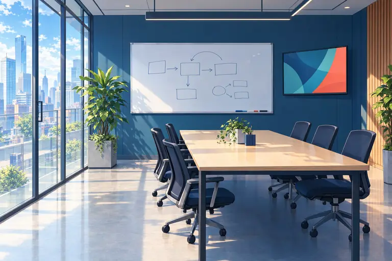
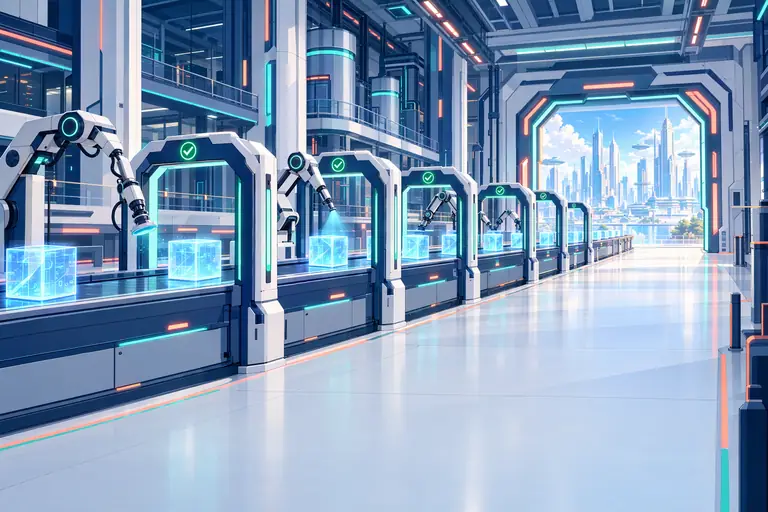
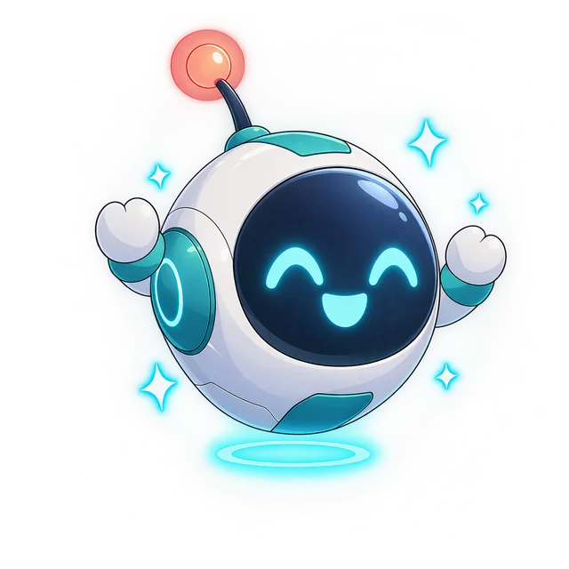
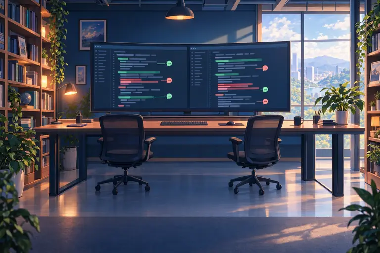
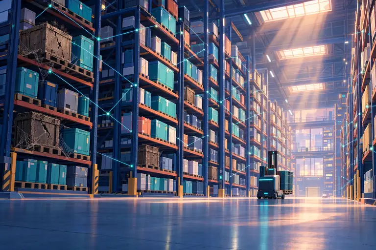
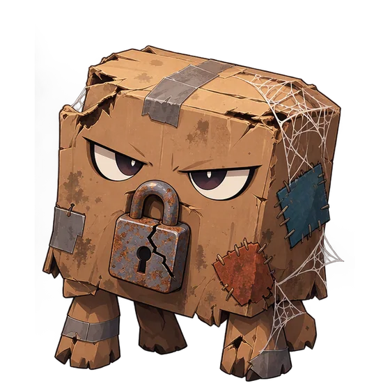
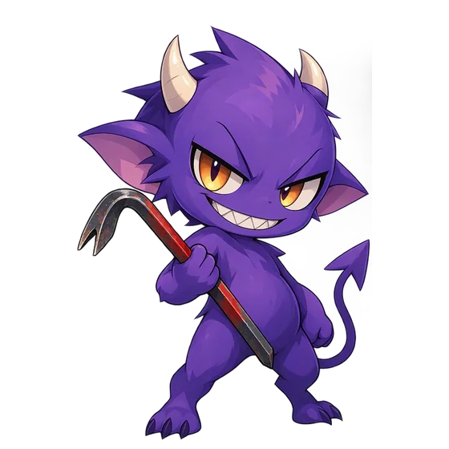
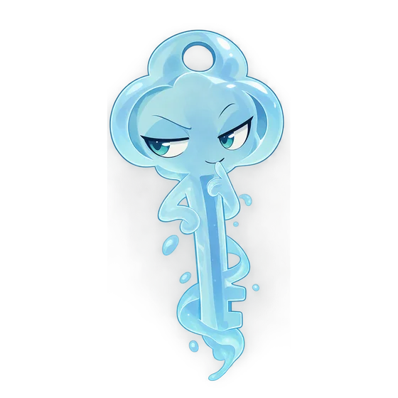

An interactive anime comic
Ship it, Dewi!
Learn GitHub, GitHub Copilot and the agent-native SDLC with Dewi and the Contoso team. Then live the hands-on workshop as a story, one click at a time.
Start reading ▶ The workshop story
15 episodes8 concepts7 workshop chaptersabout 43 min
Season 1
Learn the concepts
Eight short episodes. Maya explains GitHub, Copilot, issues and pull requests, CI/CD, Actions, agentic workflows, Copilot Fusion, code review, Dependabot and GitHub Advanced Security, one concept at a time.

EP 2 From issue to productionIssues, pull requests and the CI/CD pipeline

EP 3 The automation factoryGitHub Actions: events, workflows, jobs, steps and runners EP 4 Agents on autopilotGitHub Agentic Workflows and safe outputs EP 5 Fusion!Copilot Fusion routes and combines models for you
EP 6 A second pair of eyesCopilot code review

EP 7 Rusty's revengeDependabot alerts, security updates and version updates EP 8 Raka's gatesGitHub Advanced Security: Secret Protection and Code SecuritySeason 2
The workshop story
The hands-on workshop, told as a story. Seven episodes, one per chapter, with real screenshots and the key commands. Each one links to the matching chapter so you can do it yourself.
Meet the team
The cast
Contoso Technology Solutions is a fictional IT solution provider in Jakarta. These are the people (and one robot) who take it agent-native.
- DewiDeveloper, Contoso digital teamNew on the digital team and about to ship her first site the agent-native way. In the workshop, Dewi is you.
- Maya KusumaPlatform engineering leadDewi's mentor. Explains every concept with a whiteboard and a good metaphor.
- BitAI agent (comic mascot)How this comic draws the AI agents on the team: GitHub Copilot, Copilot Fusion and agentic workflows. A mascot, not a GitHub product.
- Daniel WijayaCTOWants every team on an agent-native engineering system. Safely.
- Lina HartonoChief People OfficerHiring 120 engineers next year. Needs a Careers page on the public site.
- Raka NugrohoCISONothing ships until it passes his security gates.
The troublemakers

BugzHides in old code. Loves unescaped user input.
LeakyA password that really wants to be committed.- RustyAn old package with a known vulnerability inside.
Section two
About the workshop
The comic follows a real, hands-on workshop: Ship Contoso's company profile the agent-native way. You create a repository from a template, deploy it to GitHub Pages, let an agentic workflow triage issues, build a feature with Copilot Fusion, review it with Copilot, and secure it with GitHub Advanced Security and Dependabot.
- About 3.5 hours of hands-on time, as one continuous story
- 42 guided steps with real, annotated screenshots and copy-ready commands
- Tested end to end in a fresh repository made from the template
- You need a GitHub account, a GitHub Copilot plan, GitHub Codespaces and a browser
- 1Prepare the GitHub repo20 minRead the episode
- 2Agentic SDLC in a codespace45 minRead the episode
- 3Build with Copilot Fusion30 minRead the episode
- 4Copilot code review25 minRead the episode
- 5Code security35 minRead the episode
- 6Dependabot30 minRead the episode
- 7GitHub Advanced Security20 minRead the episode